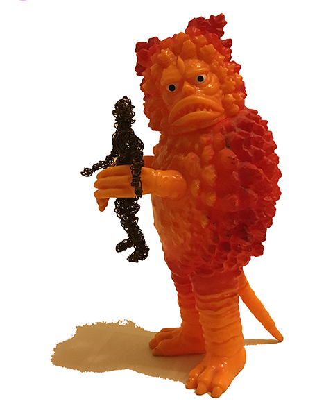

“Cool. stark. spare. rawkus. “ - Rob Prichard, Bushwick Garage
In 2016, on the shore of Brooklyn’s notorious superfund site, the Gowanus Canal, a new species was born: Giant Gowanus.
JD Godchaux: vocals, drums | Holly Orr: vocals, guitar, keyboard | Nancy Nicholson: vocals, bass, guitar
Their sound is as diverse as the trio that writes the songs. A three-headed monster of collaborative fun, GG slithers through pop, rock, alt, country, folk and a bubbling cauldron of toxic waste, breeding a new offspring: urban swamp rock.
After two years of incubation, Giant Gowanus just released it’s first EP “Meet Giant Gowanus” (February 2018). Recorded and engineered by fellow music traveler, Thatcher Ulrich (Tuffy).
Featherweight and She Doesn’t Know have received local and worldwide airplay. With over 30 songs in their catalog, Giant Gowanus has a voracious appetite to propagate their sound and feast on a town near you.
You can run…
but you can’t hide.